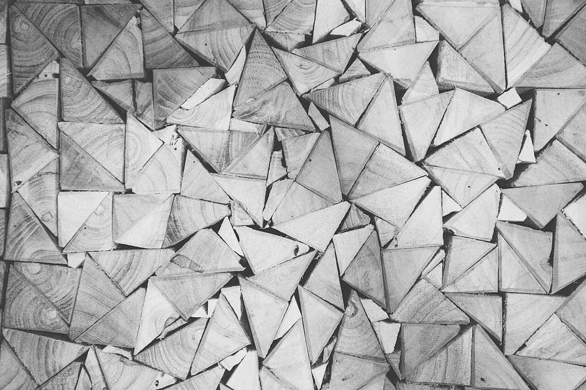

店のこと
お店のご案内
お店の考え方や歴史は、情報が届いたら書き足します。いまは確認できていることだけを載せています。



図の読み方
部位の配置図について
トップの図は、自動給餌器の断面をひとつの線画にしたものです。制作側の連想で、お店の理念・由来とは無関係です。実際の製品の仕様を示すものでもありません。
- 1フードタンクごはんを溜めておく、上の大きな容器。
- 2フタ湿気やほこりを防ぐための、タンクの蓋。
- 3回転ディスペンサータンクの底で回り、一度に出す量を区切る部分。
- 4吐出口区切られたごはんが、すべり落ちていく出口。
- 5フードボウル出てきたごはんを受け止める、下の器。
- 6操作パネル時刻や回数を設定する、本体横の小さな表示部。
写真(イメージ)
コーヒーのひとこま

確認できていること
所在地とInstagram
| 所在地 | 〒507-0048 岐阜県多治見市池田町５丁目142 |
|---|---|
| 電話 | 準備中 |
| 営業時間 | 準備中 |
| 定休日 | 準備中 |
| ご予約 | 準備中 |
| 駐車場 | 準備中 |
| SNS | Instagram @jikan_ryoko |